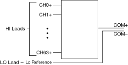
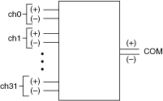
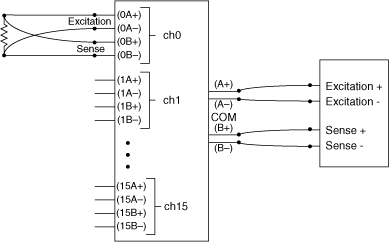

提交有关此主题的反馈。
提交有关此主题的反馈。 访问ni.com/support以获得技术支持。
访问ni.com/support以获得技术支持。NI 开关模块能够切换一根、两根和/或四根线。
在单线模式下，您将 HI 引线连接到继电器，将 LO 引线连接到公共连接。所有信号都参考这个公共连接。所有 NI多路复用器都可以在 1-wire 模式下运行。下图显示了 1-wire 模式的示例。

在 2 线模式下，您将正极和负极引线都连接到通道的端子。下图显示了 2 线模式的示例。

4 线模式通常用于 4 线电阻测量。一个通道（两条引线）用于电流激励，另一个通道（两条引线）用于测量电阻器两端的电压降（感应）。下图显示了 4 线模式的示例。

提交有关此主题的反馈。 访问ni.com/support以获得技术支持。